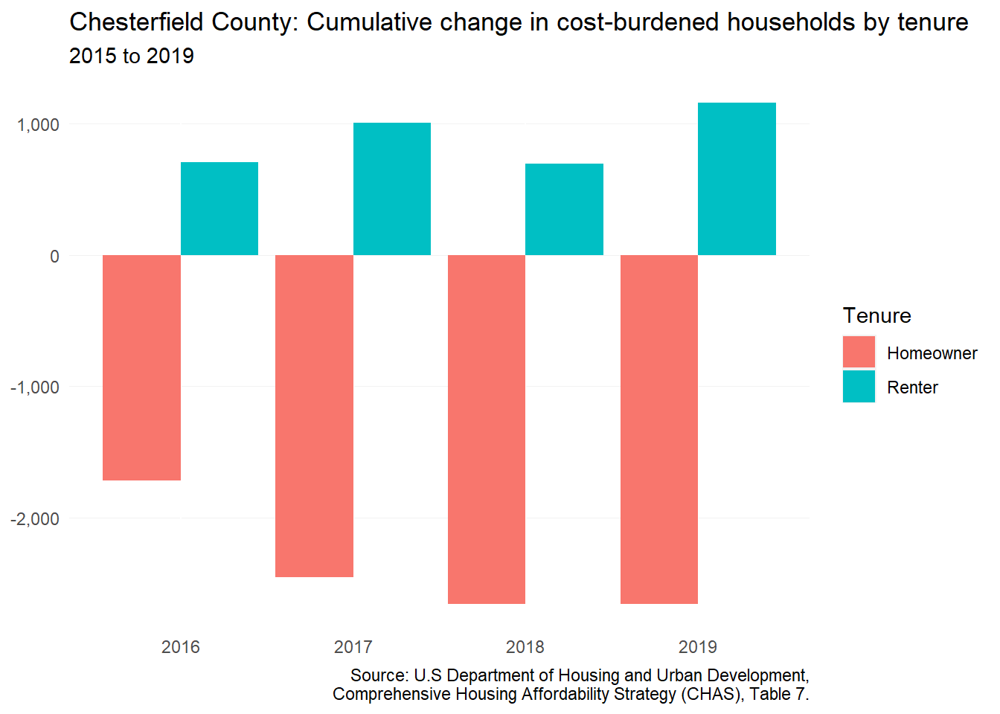

12 Chesterfield County
This chapter is a summary of the major changes to the Chesterfield County’s population and housing market in the past five years.
12.1 Takeaways
- Chesterfield County’s residential growth continues to be on par with Northern Virginia localities — increasing demand for housing at all price levels.
- Renters with children are increasingly coming to Chesterfield County — no doubt a result of a strong public school system and limited affordable for-sale housing.
- Younger adults with independent living difficulties are on the rise — increasing the need for housing with wrap around services or additional support for families to take care of adult children (i.e. home modifications, accessory dwelling units, etc.).
- Higher income renters are increasing demand for rentals in the county, but for the typical renter household income, homeownership is still challenging — requiring roughly $62,000 to afford the median home price with modest terms.
- Manufactured home communities serve as a valuable source of naturally-occurring affordable housing, but as of 2022, two of the county’s larger communities are at-risk.
12.2 Demographic and socioeconomic changes
12.2.1 Population changes
Chesterfield County’s population has been on a continual rise since 2010. Between 2016 and 2020, county population experienced an 8 percent increase — just over 26,000 new residents. As of the 2020 Census, Chesterfield County was the fourth-most populous locality in Virginia — falling only behind the Northern Virginia counties of Fairfax, Prince William, and Loudoun.
The county’s substantial growth in recent years has been directly tied to domestic migration (i.e. people living in the region, state, or nation moving into the county). Between 2020 and 2021, the county increased by 4,402 due to domestic migration. International migration and natural increases pale in comparison and have otherwise been in decline.

12.2.2 Household characteristics
The increasing number of homeowners in the county has been outpacing renters since 2016. Homeowner household increases have been across all types of households — especially those with no children (+3,068). On the other hand, renter increases have mainly been among households with children (+617), while the major decrease in households was among nonfamily renter households (-289).
As with much of the region, the senior population in the county has continued to see major growth. In the county, this growth has mainly been among seniors in family households (mainly those living with a spouse or are the head of household) (+6,566). Growth has also been significant among seniors living alone (+2,687). But declines have only been seen among seniors living with other relatives, which could include a child.
12.2.3 Income and wages
Between 2016 and 2020, the median renter household income increased by 7 percent, while the median homeowner household income increased 5 percent. In spite of those gains among the typical renter household in the county, renter incomes are nearly half that of a homeowner. The wide gap between between renter and homeowner incomes continues to speak to not only the greater wealth provided by homeownership, but also the continuing affordability challenges faced by renters seeking homeownership opportunities.
12.2.4 Persons with disabilities
In Chesterfield County, the number of individuals with independent living difficulties has increased largely among the younger age group (18 to 34 years old). While older age groups saw new increases in individuals with living difficulties of less than 100, the 18 to 34 age group had an increase of 744 individuals.
12.3 Housing supply and market changes
12.3.1 Homeownership
Chesterfield County home prices continue to rise. In 2020, median home price for the county passed the $300,000 mark. In spite of a brief decrease towards the end of 2020, home prices in the county have continued to increase amid the pandemic — getting closer and closer to $400,000.
12.3.2 Rental
Rental demand has continued to grow over the past five years. As of Q3 2022, the average market asking rent in Chesterfield County was $1,504 — which would require a household to make just over $60,000 to not be cost-burdened. Based on 2020 estimates on median renter household income, this would be a rent affordable to a large swath of the renter population.
Based on CoStar geographic markets, the Midlothian area represents a distinct rental market from the rest of the county. As of Q3 2022 the average market asking rent for Midlothian was $152 more than the rest of the county. The differences in rent can be attributed to the development of several new multifamily properties and the highly desirable location. With market rate rental development continuing to target this area, geographic disparities may continue.
12.3.3 Housing assistance
| Subsidies | Properties affected | Units included | |
|---|---|---|---|
| Added | 17 | 17 | 833 |
| Removed | -1 | -1 | -144 |
| Net change | 16 | 16 | 689 |
| Sources: National Housing Preservation Database and Virginia Housing. |
Change in number of assisted units (NHPD)
12.3.4 Naturally-occurring affordable housing
As defined in this report, there are 19 rental properties in the Chesterfield County that qualify as naturally-occurring affordable housing. There are about 3,712 apartments across these properties, which make up approximately 23 percent of all multifamily (two or more units) rental housing in the county.
The majority of these properties were constructed in the 1970s and 1980s. These properties command much higher rents than those built pre-1970.
[1] 3712This estimate does not include manufactured home communities which could also be considered NOAH properties because of their deep affordability without public subsidy. Chesterfield County still remains the region’s foremost location for manufactured home communities — with at least 1,543 homes spread out across 13 communities.
Since the release of the Framework, Bermuda Estates, located along the county’s Route 1 corridor, was purchased by project:HOMES. This initiative was taken upon by project:HOMES in order to stabilize the community and since the acquisition, they have made significant infrastructure improvements, replaced homes, conducted noteworthy community engagement, and placed a community center.
This stands in contrast to private activity in some of Chesterfield County’s largest manufactured home communities, Suburban Village and Shady Hill. Suburban Village was purchased in early 2021 by a real estate investment firm, while Shady Hill Mobile Home Park recently accepted a purchase offer in Summer 2022. Both acquisitions have raised concerns among residents and advocates for significant rent increases and potential redevelopment.
| Community name | Estimated units |
|---|---|
| Greenleigh Mobile Home Park | 502 |
| Harbour East Village | 260 |
| Suburban Mobile Village | 226 |
| Holiday Mobile Home Park | 133 |
| Shady Hill Mobile Home Park | 110 |
| El Rancho Trailer Court | 55 |
| Conner Homes | 54 |
| Plantation Mobile Homes | 48 |
| Bellwood Mobile Home Park | 41 |
| Falling Creek Mobile Home Park | 35 |
| Parkway Trailer Court | 28 |
| Ponderosa Mobile Home Park | 27 |
| Carneal's Trailer Park | 24 |
12.4 Gap analysis
12.4.1 Affordability of current housing stock
In Chesterfield County, the median renter household income is just enough to afford the average market asking rent. In 2020, the rent affordable based on the median renter household income was $1,328, while the average asking rent was $$1,265 — meaning that the typical renter could afford $63 more than the average asking rent.
This difference between affordable rent and asking rent has been shrinking in recent years. From a difference of $89 in 2016 to $63 in 2020.
Although a typical renter can more easily find an affordable rental, if they are looking to move onto homeownership, they face a wider gap to cross.
In Chesterfield County, median renter household incomes have not been enough to afford the median sales price in the county from 2016 to 2020. In 2020, the gap between renter income and the income needed to afford the median priced home was $8,800. This is an increase of nearly $800 from the gap in 2016.

Across renter households with incomes below 80 percent AMI, the gap in affordable housing has increased by 204 units from 2015 to 2018 — for a total shortage of 7,569 rental units affordable to households making 80 percent AMI or less. This estimated gap is based on matching renter income to rental housing affordable to that income and should be considered with some caution. Household incomes matching housing costs does not necessarily reflect that a household is able to afford housing costs given the numerous other financial responsibilities held by individuals and families. Nonetheless, the estimated gap provides our closest assessment of a gap in housing at specific income-levels. For Chesterfield County, the gap has increased most significantly for households between 51 and 80 percent AMI — suggesting a growing need for affordable housing for higher income households.
12.4.2 Impact of housing costs
From 2015 to 2018, the number of cost burden homeowners has been in decline. By 2018, there was a total decline of 2,661 cost-burdened homeowners from 2015 estimates. But during this same timeframe, the number of cost-burdened renters has increased by 696. The disparate changes in cost burden in Chesterfield County speak to growing affordability issues for renters and greater stability for existing homeowners.

Pre-pandemic eviction filings were typically above 500 each month, while eviction judgements were made were nearly half of those filings. The pandemic protections signficantly decreased filings to nearly a third of pre-pandemic numbers. Eviction judgements remained low throughout much of 2021, but filings and judgements saw increases in the early part of 2022 — signalling the potential for greater renter instability as pandemic renter protections end.